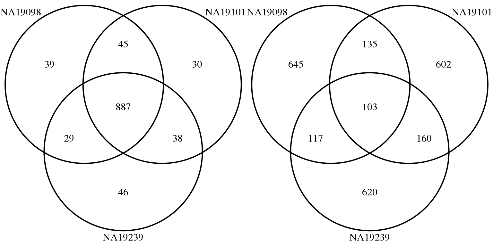
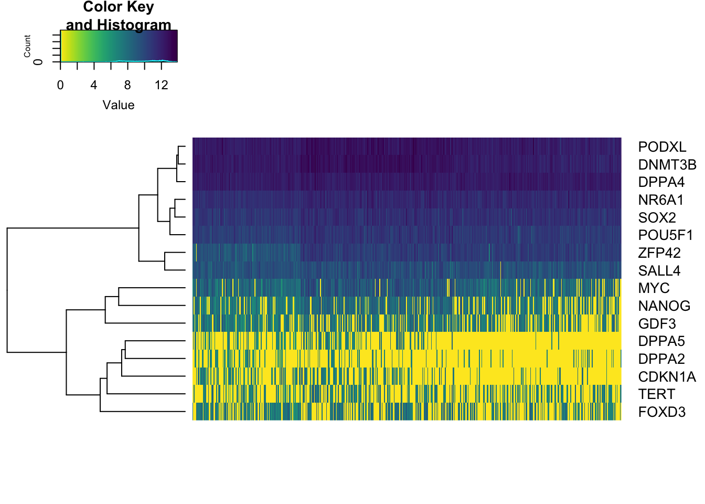
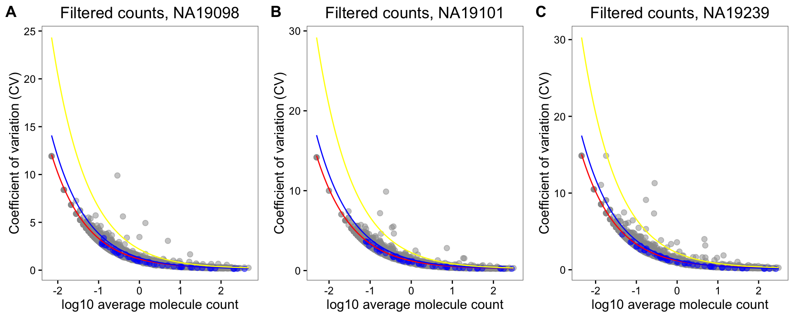
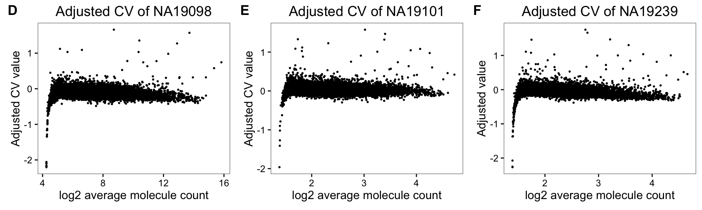

Last updated: 2016-04-01
Code version: 34345c9c3889d9b3b288f2e4f80ff6b3e0d7a5e7
Objective
This page documents analysis performed for the paper figures.
Set up
library("data.table")
library("dplyr")
library("limma")
library("edgeR")
library("ggplot2")
library("grid")
theme_set(theme_bw(base_size = 12))
source("functions.R")
library("Humanzee")
library("cowplot")
library("MASS")
library("matrixStats")
source("../code/plotting-functions.R")
Prepare data
We import molecule counts before standardizing and transformation and also log2-transformed counts after batch-correction. Biological variation analysis of the individuals is performed on the batch-corrected and log2-transformed counts.
# Import filtered annotations
anno_filter <- read.table("../data/annotation-filter.txt",
header = TRUE,
stringsAsFactors = FALSE)
# Import filtered molecule counts
molecules_filter <- read.table("../data/molecules-filter.txt",
header = TRUE, stringsAsFactors = FALSE)
stopifnot(NROW(anno_filter) == NCOL(molecules_filter))
# Import final processed molecule counts of endogeneous genes
molecules_final <- read.table("../data/molecules-final.txt",
header = TRUE, stringsAsFactors = FALSE)
stopifnot(NROW(anno_filter) == NCOL(molecules_final))
# Import gene symbols
gene_symbols <- read.table(file = "../data/gene-info.txt", sep = "\t",
header = TRUE, stringsAsFactors = FALSE, quote = "")
# Import cell-cycle gene list
cell_cycle_genes <- read.table("../data/cellcyclegenes.txt",
header = TRUE, sep = "\t",
stringsAsFactors = FALSE)
# Import pluripotency gene list
pluripotency_genes <- read.table("../data/pluripotency-genes.txt",
header = TRUE, sep = "\t",
stringsAsFactors = FALSE)$To
Load gene CVs computed over all cells (link1), CV computed only over the expressed cells (link2), and differential CV results when including only the expressed cells (link3).
load("../data/cv-all-cells.rda")
load("../data/cv-expressed-cells.rda")
load("../data/sig-mean-expressed.rda")
## permutation results
# expressed cells
load("../data/permuted-pval-expressed.rda")
# # all cells
# load("../data/permuted-pval.rda")
Compute a matrix of 0’s and 1’s labeling non-detected and detected cells, respectively.
molecules_expressed <- molecules_filter
molecules_expressed[which(molecules_filter > 0 , arr.ind = TRUE)] <- 1
molecules_expressed <- as.matrix((molecules_expressed))
Take the gene subset included in the final data.
genes_included <- Reduce(intersect,
list(rownames(molecules_final),
rownames(expressed_cv$NA19098),
rownames(permuted_pval)) )
molecules_filter_subset <- molecules_filter[
which(rownames(molecules_filter) %in% genes_included), ]
molecules_final_subset <- molecules_final[
which(rownames(molecules_final) %in% genes_included), ]
molecules_expressed_subset <- molecules_expressed[
which(rownames(molecules_expressed) %in% genes_included), ]
molecules_final_expressed_subset <- molecules_final_subset*molecules_expressed_subset
molecules_final_expressed_subset[which(molecules_expressed_subset == 0, arr.ind = TRUE)] <- NA
permuted_pval_subset <- permuted_pval[which(rownames(permuted_pval) %in% genes_included), ]
names(permuted_pval_subset) <- rownames(permuted_pval)[which(rownames(permuted_pval) %in% genes_included)]
expressed_cv_subset <- lapply(expressed_cv, function(x)
x[which(rownames(x) %in% genes_included), ] )
names(expressed_cv_subset) <- names(expressed_cv)
expressed_dm_subset <- expressed_dm[which(rownames(expressed_dm) %in% genes_included), , ]
dim(molecules_final_subset)
[1] 12137 564
dim(molecules_expressed_subset)
[1] 12137 564
all.equal(rownames(expressed_cv_subset$NA19098),
rownames(molecules_final_expressed_subset) )
[1] TRUE
all.equal(names(permuted_pval_subset),
rownames(molecules_expressed_subset) )
[1] TRUE
Compute drop-out rates.
drop_out <- lapply(unique(anno_filter$individual), function(ind) {
temp_df <- molecules_filter_subset[,anno_filter$individual == ind]
zero_count <- rowMeans(temp_df == 0)
return(zero_count)
})
names(drop_out) <- unique(anno_filter$individual)
drop_out$all <- rowMeans(as.matrix(molecules_filter_subset) == 0)
summary(drop_out$NA19098)
Min. 1st Qu. Median Mean 3rd Qu. Max.
0.00000 0.01408 0.17610 0.27930 0.50700 0.99300
summary(drop_out$NA19101)
Min. 1st Qu. Median Mean 3rd Qu. Max.
0.00000 0.03483 0.24880 0.32610 0.58210 0.99500
summary(drop_out$NA19239)
Min. 1st Qu. Median Mean 3rd Qu. Max.
0.00000 0.02262 0.20810 0.30980 0.56560 0.99550
summary(drop_out$all)
Min. 1st Qu. Median Mean 3rd Qu. Max.
0.00000 0.02837 0.21990 0.30800 0.56030 0.92730
Main figure 1

[Chunk not evaluted]
# Venn diagrams
# only expressed cells
library(gplots)
genes <- rownames(expressed_cv_subset[[1]])
venn_mean_rank <- gplots::venn(
list(NA19098 = genes[ which(rank(expressed_cv_subset[[1]]$expr_mean) > length(genes) - 1000 ) ],
NA19101 = genes[ which(rank(expressed_cv_subset[[2]]$expr_mean) > length(genes) - 1000 ) ],
NA19239 = genes[ which(rank(expressed_cv_subset[[3]]$expr_mean) > length(genes) - 1000 ) ] ) )
venn_cv_rank <- gplots::venn(
list(NA19098 = genes[ which(rank(expressed_cv_subset[[1]]$expr_cv) > length(genes) - 1000 ) ],
NA19101 = genes[ which(rank(expressed_cv_subset[[2]]$expr_cv) > length(genes) - 1000 ) ],
NA19239 = genes[ which(rank(expressed_cv_subset[[3]]$expr_cv) > length(genes) - 1000 ) ] ) )
# cv and mean of batch-corrected data including all cells
# across all three indivivduals
par(mfrow = c(1,2))
all_cv <- matrixStats::rowSds(2^molecules_final_subset)/rowMeans(2^molecules_final_subset)
all_mn <- rowMeans(2^molecules_final_subset)
plot(y = all_cv,
x = log2(all_mn),
cex = .9, col = alpha("grey40", .8), lwd = .6,
xlab = "log2 gene mean abundance",
ylab = "Coefficient of variation",
main = "All cells, all indviduals",
xlim = c(5,17), ylim = c(0,4.5))
points(y = all_cv,
x = log2(all_mn),
col = rev(RColorBrewer::brewer.pal(10, "RdYlBu"))[
cut(drop_out$all, breaks = seq(0, 1, by = .1),
include.lowest = TRUE)],
cex = .6, pch = 16)
# cv and mean of batch-corrected data including only expressed cells
# across all three indivivduals
plot(y = expressed_cv_subset$all$expr_cv,
x = log2(expressed_cv_subset$all$expr_mean),
cex = .9, col = alpha("grey40", .8), lwd = .6,
xlab = "log2 gene mean abundance",
ylab = "Coefficient of variation",
main = "Expressed cells, all individuals",
xlim = c(5,17), ylim = c(0,4.5))
points(y = expressed_cv_subset$all$expr_cv,
x = log2(expressed_cv_subset$all$expr_mean),
col = rev(RColorBrewer::brewer.pal(10, "RdYlBu"))[
cut(drop_out$all, breaks = seq(0, 1, by = .1),
include.lowest = TRUE)],
cex = .6, pch = 16)
# make labels
plot(x = rep(1,10), y = 1:10,
pch = 15, cex = 2, axes = F, xlab = "", ylab = "",
col = (RColorBrewer::brewer.pal(10, "RdYlBu")), xlim = c(0, 13))
text(labels = rev( levels(cut(drop_out$NA19098, breaks = seq(0, 1, by = .1),
include.lowest = TRUE))) ,
y = 1:10, x = 3, cex = .7, adj = 0)
title(main = "drop-out rate")
library(VennDiagram)
library(gridExtra)
## venn diagrams of expressed cells
genes <- rownames(expressed_cv_subset[[1]])
## create list of top 1000 mean
venn_mean_expressed <- list(
NA19098 = genes[ which(rank(expressed_cv_subset[[1]]$expr_mean) > length(genes) - 1000 ) ],
NA19101 = genes[ which(rank(expressed_cv_subset[[2]]$expr_mean) > length(genes) - 1000 ) ],
NA19239 = genes[ which(rank(expressed_cv_subset[[3]]$expr_mean) > length(genes) - 1000 ) ] )
## create list of top 1000 CV
venn_cv_expressed <- list(
NA19098 = genes[ which(rank(expressed_cv_subset[[1]]$expr_cv) > length(genes) - 1000 ) ],
NA19101 = genes[ which(rank(expressed_cv_subset[[2]]$expr_cv) > length(genes) - 1000 ) ],
NA19239 = genes[ which(rank(expressed_cv_subset[[3]]$expr_cv) > length(genes) - 1000 ) ] )
## put the two venn diagrams together
grid.arrange(gTree(children = venn.diagram(venn_mean_expressed,filename = NULL,
category.names = names(venn_mean_expressed),
name = "Top 1000 mean")),
gTree(children = venn.diagram(venn_cv_expressed,filename = NULL,
category.names = names(venn_cv_expressed),
name = "Top 1000 CV")),
ncol = 2)

Main figure 2

[chunk not evaluated]
par(mfrow = c(1,1))
hist(drop_out$all, xlim = c(0,1))
#NANOG: a key pluripotency gene.
#All the other genes had significant difference between adjusted CV of the expressed cells.
query_genes <- c("NANOG", "TFPI", "SLC9A5", "SLC25A16", "SREK1IP1")
query_genes_ensg <- gene_symbols[which(gene_symbols$external_gene_name %in% query_genes), ]
## print permuted p-values of the chosen genes
pvals_tab <- rbind(rownames(permuted_pval)[which(rownames(permuted_pval) %in% query_genes_ensg$ensembl_gene_id)],
gene_symbols$external_gene_name[gene_symbols$ensembl_gene_id %in% rownames(permuted_pval)[which(rownames(permuted_pval) %in% query_genes_ensg$ensembl_gene_id)]],
permuted_pval$mad_pval[which(rownames(permuted_pval) %in% query_genes_ensg$ensembl_gene_id)] )
pdf("figure/cv-adjusted-summary-pois-final.Rmd/chosen-genes.pdf",
height = 8, width = 12)
#### specify the order of the plot, making same gene appear in the same column
layout( matrix(c(2, 5, 8, 11, 14,
1, 4, 7, 10, 13,
3, 6, 9, 12, 15
), nrow = 3, byrow = TRUE))
for (i in 1:nrow(query_genes_ensg)) {
df <- do.call(cbind,
lapply(unique(anno_filter$individual), function(ind) {
table(molecules_filter_subset[which(rownames(molecules_final_expressed_subset) %in% query_genes_ensg$ensembl_gene[i]), anno_filter$individual == ind] == 0)
}) )
colnames(df) <- unique(anno_filter$individual)
df <- t(t(df)/colSums(df))
barplot(df, col = c("grey40", "grey80"),
ylab = "Proportion of detected cells",
cex.names = 0.9)
plot_density_overlay(
molecules = molecules_final_expressed_subset,
annotation = anno_filter,
which_gene = query_genes_ensg$ensembl_gene_id[i],
labels = "",
xlims = c(4,12.5), ylims = c(0,1),
gene_symbols = gene_symbols)
individuals <- unique(anno_filter$individual)
library(scales)
library(broman)
crayon <- brocolors("crayon")
cols <- c("Mango Tango", "Green", "Violet Blue")
cols <- alpha(crayon[cols], .7)
barplot(height = abs(unlist(expressed_dm_subset[which(rownames(expressed_dm_subset) %in% query_genes_ensg$ensembl_gene_id[i]),])), col = cols,
ylim = c(0,.7), border = "white",
ylab = "Absolute value of adjusted CV",
cex.names = 0.9)
abline(h = 0)
# print MAD values
mad_val <- sprintf("%.2f",round(drop_out$all[which(rownames(molecules_final_subset) %in% query_genes_ensg$ensembl_gene_id[i])], digits = 2))
if (as.numeric(mad_val) < .01) {
mtext(text = paste0("MAD<.01"),
side=3, line = 2)
} else {
mtext(text = paste0("MAD=", mad_val),
side=3, line = 2)
}
# print permuted p-value for the adjusted coefficient of variation
if (i !=2) {
mtext(text = expression(paste(italic("p"),"<",10^"-5")), side=3)
}
if (i == 2) {
mtext(text = expression(paste(italic("p"),"=.80")), side = 3)
}
abline(h = 0)
}
dev.off()
[chunk not evaluated]
heatmap of pluripotent genes
## Heatmap
library(scales)
library(broman)
library(viridis)
crayon <- brocolors("crayon")
cols <- c("Mango Tango", "Green", "Violet Blue")
cols <- alpha(crayon[cols], .7)
which_pluri <- rownames(molecules_final_expressed_subset) %in% pluripotency_genes
df <- as.matrix(molecules_final_subset[which_pluri,])
df[which(molecules_filter_subset[which_pluri,] == 0, arr.ind = TRUE)] <- 0
gplots::heatmap.2(
df,
Colv = FALSE,
trace = "none",
dendro = "row",
labCol = "",
labRow = gene_symbols$external_gene_name[match(rownames(molecules_final_subset)[which_pluri], gene_symbols$ensembl_gene_id)],
col = rev(viridis::viridis(256)))

Supp. figure: CV-mean, all cells
Legend: Coefficients of variation plotted against average molecule counts across cells of each individual cell line. Grey dots represent endogeneous genes, and blue dots indicate ERCC spike-in control genes. Red curve depicts the expected coefficients of variation assuming the endogeneous genes follow a poisson distribution. Likewise, blue curve depicts the expected CVs of the ERCC spike-in control genes. Yellow curve predicts the expected CVs assuming standard deviation is 3 times the ERCC spike-in genes.
theme_set(theme_bw(base_size = 12))
theme_update(panel.grid.minor.x = element_blank(),
panel.grid.minor.y = element_blank(),
panel.grid.major.x = element_blank(),
panel.grid.major.y = element_blank())
cowplot::plot_grid(
plot_poisson_cv(molecules_filter[grep("ERCC", rownames(molecules_filter),
invert = TRUE),
anno_filter$individual == "NA19098"],
molecules_filter[grep("ERCC", rownames(molecules_filter)),
anno_filter$individual == "NA19098"],
is_log2count = FALSE,
main = "Filtered counts, NA19098") +
theme(legend.position = "none"),
plot_poisson_cv(molecules_filter[grep("ERCC", rownames(molecules_filter),
invert = TRUE),
anno_filter$individual == "NA19101"],
molecules_filter[grep("ERCC", rownames(molecules_filter)),
anno_filter$individual == "NA19101"],
is_log2count = FALSE,
main = "Filtered counts, NA19101") +
theme(legend.position = "none"),
plot_poisson_cv(molecules_filter[grep("ERCC", rownames(molecules_filter),
invert = TRUE),
anno_filter$individual == "NA19239"],
molecules_filter[grep("ERCC", rownames(molecules_filter)),
anno_filter$individual == "NA19239"],
is_log2count = FALSE,
main = "Filtered counts, NA19239") +
theme(legend.position = "none"),
nrow = 1,
labels = LETTERS[1:3])

Supp. figure: permutation test results
Expressed cells
Legend: (A) Histogram of empirical p-values based on 12,192 permutations. (B) -log10 empirical p-values are plotted against average gene expression levels. Blue line displays predicted -log10 p-values using locally weighted scatterplot smooth (LOESS). (C) Median of Absolute Deviation (MAD) of genes versus average gene expression levels. LOESS was also used to depict predicted MAD values.
# Bins average gene expression and make a boxplot of -log10 p-values
# for each bin
permuted_pval_subset[which(permuted_pval_subset == 0)] <- 1/length(permuted_pval)
mad_expressed <- rowMedians( abs( as.matrix(expressed_dm_subset) - rowMedians(as.matrix(expressed_dm_subset)) ) )
plot_grid(
ggplot( data.frame(pvals = permuted_pval_subset),
aes(x = pvals) ) +
geom_histogram() + xlim(0, 1) +
labs(x = "Permutation-based p-values", y = "Count"),
ggplot( data.frame(pvals = permuted_pval_subset,
gene_mean = rowMeans(as.matrix(molecules_final_expressed_subset),
na.rm = TRUE),
bins = cut_number(rowMeans(as.matrix(molecules_final_expressed_subset),
na.rm = TRUE),
n = 10)),
aes(x = rowMeans(as.matrix(molecules_final_expressed_subset),
na.rm = TRUE), y = -log10(pvals)) ) +
geom_point(alpha = .5, cex = .2) +
stat_smooth() +
theme(legend.position = "none") +
ylab("-log10(p-value)") +
xlab("Average gene expression level"),
ggplot( data.frame(mad = mad_expressed,
gene_mean = rowMeans(as.matrix(molecules_final_expressed_subset),
na.rm = TRUE),
bins = cut_number(rowMeans(as.matrix(molecules_final_expressed_subset),
na.rm = TRUE), n = 10)),
aes(x = gene_mean, y = mad) ) +
geom_point( alpha = .5, cex = .2) +
stat_smooth(col = 11) +
theme(legend.position = "none") +
ylab("Median of absolute deviation (MAD)") +
xlab("Average gene expression level"),
ncol = 2,
labels = LETTERS[1:3]
)

All cells
Legend: (A) Histogram of empirical p-values based on 12,192 permutations. (B) -log10 empirical p-values are plotted against average gene expression levels. Blue line displays predicted -log10 p-values using locally weighted scatterplot smooth (LOESS). (C) Median of Absolute Deviation (MAD) of genes versus average gene expression levels. LOESS was also used to depict predicted MAD values.
[chunk not evaluated]
# Bins average gene expression and make a boxplot of -log10 p-values
# for each bin
gene_means <- rowMeans(as.matrix(molecules_final_subset))
plot_grid(
ggplot( data.frame(pvals = permuted_pval$mad_pval),
aes(x = pvals) ) +
geom_histogram() + xlim(0, 1) +
labs(x = "Permutation-based p-values", y = "Count"),
ggplot( data.frame(pvals = permuted_pval$mad_pval,
gene_mean = rowMeans(as.matrix(molecules_final)),
bins = cut_number(gene_means, n = 10)),
aes(x = gene_mean, y = -log10(pvals)) ) +
geom_point(alpha = .5, cex = .2) +
stat_smooth() +
theme(legend.position = "none") +
ylab("-log10(p-value)") +
xlab("Average gene expression level"),
ggplot( data.frame(mad = mad,
gene_mean = rowMeans(as.matrix(molecules_final)),
bins = cut_number(gene_means, n = 10)),
aes(x = gene_mean, y = mad) ) +
geom_point( alpha = .5, cex = .2) +
stat_smooth(col = 11) +
theme(legend.position = "none") +
ylab("Median of absolute deviation (MAD)") +
xlab("Average gene expression level"),
ncol = 2,
labels = LETTERS[1:3]
)